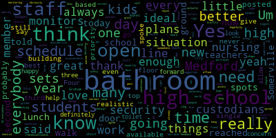
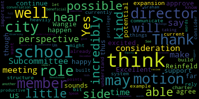
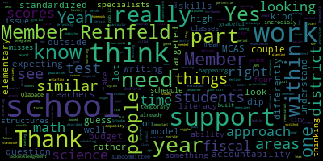
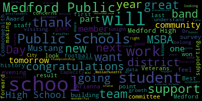
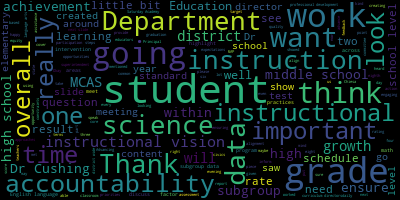

AI-generated transcript of 11.4.2024 - Regular MSC Meeting
English | español | português | 中国人 | kreyol ayisyen | tiếng việt | ខ្មែរ | русский | عربي | 한국인
Back to all transcripts
[Lungo-Koehn]: Forgot the meeting was on zoom just head home. Everyone.
[Graham]: Dr cushing, I had some trouble getting in via the link that was. On the agenda on the website, so just. I was unsuccessful. Somebody sent me a separate link and I got here, but so I don't know if there was just something strange happening on my end, but I think. Oh, OK, great. I just want to make sure if other people are trying to get in that they don't sort of get stuck. So if you all hear of anybody else having a problem, let us know.
[Peter Cushing]: Will, could you post an updated link to our Facebook page? But also, I noticed member Branley's not here. So perhaps we could send it directly to her. I can do that right now.
[Ruseau]: Yeah, I just posted the dial location instead of the hyperlink. But I'll do that now.
[Peter Cushing]: Thank you. And I'll send it to member Branley immediately.
[Graham]: Okay. I'm going to get us started. I know the mayor is in transit, so she'll be with us in just a few when she's not in transit anymore. The 17th regular meeting of the Medford School Committee for November 4th via Zoom. at 6 PM. Please be advised that there will be a meeting of the Medford School Committee held via remote participation only. The meeting is being recorded. The meeting can be viewed live on Medford Public Schools YouTube channel through Medford Community Media on your local cable channel, which is Comcast channel 9, 8 or 22 and Verizon channel 43, 45 or 47. The zoom meeting I.D. if anyone is needing that it's nine seven eight. Three four one four six two four five. Members so you please call the roll.
[Ruseau]: Member Pranley. Moment member Graham. Here. Member Adapa. Here. Member Olapade. Here. Member Reinfeld.
[Lungo-Koehn]: Present.
[Ruseau]: Member Rizzo, present. Mayor Lungo-Koehn.
[Lungo-Koehn]: Present.
[Ruseau]: And I believe Member Branley is now here. I don't know if she can unmute yet.
[Graham]: Give her just one second. We can call her.
[Ruseau]: Member Branley, yes.
[Graham]: I am here. OK, seven present, zero absent. Um, all rise to salute the flag. I pledge allegiance to the flag of the United States of America and to the Republic for which it stands one nation under God, indivisible with liberty and justice for all. Okay. Item number three. Uh, we have the good of the order. Any comments from the committee? We'll just say that the annual conference is later this week. Thank you to all the committee members for taking time out of their day to days. We're all to attend later this week in hiatus. And, um, we will move on to the consent agenda. So item number four is the consent agenda. We have approval of bills and payrolls approval, capital purchases, approval of grants. Um, there is one grant being requested to be approved by the Medford educational foundation for $1,000 for model UN approval of field trips and approval of meeting minutes, our regular meeting on October 21st and our special meeting on October 28th. Is there a motion to approve?
[Ruseau]: Motion to sever the minutes for October 28th and approve the rest.
[Graham]: Motion to sever the minutes for October 28th by member Rousseau. Is there a second? Second. Seconded by member Reinfeld. Roll call.
[Ruseau]: Member Bramley?
[Branley]: Yes.
[Ruseau]: Member Graham?
[Intoppa]: Yes.
[Ruseau]: Member Intoppa?
[Intoppa]: Yes.
[Ruseau]: Member Lapate?
[Intoppa]: Yes.
[Ruseau]: Member Reinfeld?
[Graham]: Yes.
[Ruseau]: Member Ruseau? Yes. Mayor Lankford?
[Graham]: Yes. There's seven in the affirmative, zero in the negative. The motion is severed. And then we have a motion by Member Ruseau to approve the remainder of the consent agenda.
[Olapade]: Motion to approve.
[Graham]: and seconded by member Olapade. Roll call.
[Ruseau]: Member Branley?
[Graham]: Yes.
[Ruseau]: Member Graham?
[Branley]: Yes.
[Ruseau]: Member Ntuka?
[Branley]: Yes.
[Ruseau]: Member Olapade? Member Reinfeld?
[Reinfeld]: Yes.
[Ruseau]: Member Soyes, Mayor Lengelker?
[Graham]: Yes. Seven in the affirmative, zero in the negative. The consent agenda is approved. Um, the special meeting on October 28th member. So, did you have a question or comment?
[Ruseau]: Yes, the votes of the meeting are listed as 5-2, which implies 5 in the affirmative, 2 in the negative. It was actually 5 in the affirmative, 0 in the negative, 2 were absent. The minutes have actually already been updated by Lisa and updated in our drive. But I just wanted to note that. And I'll motion to approve them as amended.
[Graham]: Second. Motion to approve as amended by member Rousseau, seconded by member Reinfeld. Roll call.
[Ruseau]: Ever been like, yes, never Graham.
[Intoppa]: Yes.
[Ruseau]: Yes. Yes. Yes.
[Intoppa]: Yes.
[Ruseau]: Yes. Yes.
[Graham]: Um, item number five report of subcommittees. We have none. Uh, and onto item number six, which is the report of the superintendent. So, um, number one, the superintendent updates and comments, Dr. Marice Edouard-Vincent.
[Edouard-Vincent]: Thank you. And good evening. Good evening to everyone. It is great to be with you all tonight for this evening's school committee meeting. While we normally hold our sessions in person, tonight we are on Zoom while our great city finalizes its preparation for tomorrow. Ahead of election day, I want to begin my remarks tonight by speaking about the importance of voting. Voting is essential because it empowers you to express your beliefs and shape the future of our local community. the Commonwealth of Massachusetts, and our country. It's not just a right, but a civic duty, allowing you to initiate change and advocate for your community. Your vote is your voice. Information on where to vote, what is on the ballot, and when polls open are available on the City of Medford's website. And as a result of election day tomorrow, Medford Public Schools will be closed for all students tomorrow. However, staff will be present at all of our school campuses as one of our scheduled professional development dates is taking place tomorrow. Our educators have been doing a marvelous job supporting our students' social, emotional, and educational journey so far this year. Myself and all of our other administrators are looking forward to connecting with our staff tomorrow during our Professional Development Day. So I'd like to just rewind a little bit over the past few weeks. I want to thank all of our administrators, elected officials, City Year partners, building staff, and community leaders for reading to our Missittuck students in late October as part of the Jumpstart Read for the record day. Our Missittuck students were part of over 2 million readers across the world who enjoyed this year's book, Piper Chen Sings. I'd also like to extend a special thank you to all of our community members who joined our students during last month's Walking Wednesdays. Students enjoyed the presence of fellow peers and caregivers on Wednesdays throughout October while all walking to school, including the National Walk and Bike to School Day on October 9th. These outdoor commutes to school took place at all of our elementary and middle schools. I am also very, very excited to share good news that happened yesterday afternoon, where our Medford Mustang Marching Band won the Division II New England Scholastic Band Association Championship for the second year in a row. Performing their 2024 show, After the Rain, our band won Caption Awards for Best Visual Performance, Best Color Guard, and Best Overall Effect. Additionally, students Qian Liao and Benjamin Verz received the award for Best Drum Majors. Congratulations to them. Our Mustangs also claimed the top spot with a Platinum Award and a score of 95.37, making them the only band in Division I, II, or III to achieve a Platinum Award. The band includes students from Medford High School, Medford Vocational School, and both the Andrews and McGlynn Middle Schools. Congratulations to all of our students and our first year band director in Medford Public Schools, Mr. Michael Dampier, on a fantastic, fantastic fall season. So congratulations to them. And here they are with all of their wonderful awards. I also want to just quickly jump over to athletics to share some great news. Our football team continued their memorable season with another history-making performance. Yes, our senior, Brianna Cerullo, became the first female in Mustang football history to score in a varsity game. punching in a two-yard run during our 38-6 win over Chelsea. So that's a huge congratulations, Brianna. Brianna is just the second female to participate in football at the varsity level. in school history and the first one to find her way to the end zone. Congratulations to Brianna for having your name live in Mustang lore forever. I would also like to extend my sincerest admiration to our football team for fostering an inclusive and welcoming environment for all of our students. So congratulations to them. In the spirit of congratulations, I'd also like to take a moment to congratulate our Medford rowing team on a superb fall season that culminated at the MPSRA Fall Championship. Our crew team won two gold, one silver, and two bronze medals at the state championship. Medford High School also won the Massachusetts State Team Sculling Trophy for the first time in school history. And last but not least, hot off the press, just came downstairs from the game. Our unified basketball team just won their game upstairs. It was wonderful. And I want to thank Mayor Lungo-Koehn and Member Intoppa. for being upstairs supporting our unified basketball team and our wonderful band played. They sounded fabulous. It was a great victory, a great game, a great night for Mustang Nation. So I want to just thank and congratulate all of our Mustangs for a terrific fall season. Yes, we give them a shout out, clapping for all of you. Keep up the great, great work. As I continue with my announcements, just for everyone to be aware, next Monday, November 11th, Medford Public Schools will be closed in honor of Veterans Day. This Veterans Day, we honor and thank all the brave men and women who have served in our military. Their sacrifices and dedication protect our freedoms and ensure our safety. Please take a moment next Monday to reflect on their courage and commitment while recognizing the importance of supporting our veterans, both during and after their service. Thank you sincerely to all of our veterans. On Tuesday, September 12th, Medford Public Schools and CCSR, the Center for Citizenship and Social Responsibility, will be hosting a dedication ceremony for the new Crystal Campbell Memorial Garden at three o'clock, which will be taking place at the front of Medford High School. The new garden will honor Crystal, a 2001 Medford High School graduate, who tragically passed away during the 2013 Boston Marathon bombing. The Memorial Garden will celebrate her life and passion for bringing people together. Light refreshments will be served following the dedication ceremony and all members of the public are welcome to attend. Lastly, I wanna just provide some brief MSBA updates. I want to inform the committee and the community that MSBA will be visiting our schools beginning next week as part of the state's school survey assessment. The MSBA will be visiting all schools in the Commonwealth during the next year, except schools that are in the MSBA program pipeline. So as a result, they will not be visiting Medford High School, given the ongoing new high school building process, but they will be visiting all of our other schools. The school surveys of approximately 1,580 schools in Massachusetts will result in a published report by the MSBA, which will detail a shared understanding of the building condition and general environment for all of the Commonwealth's public schools. The assessment will evaluate several key factors including condition, capacity, maintenance, and educational environment. The last school survey of all schools in the Commonwealth was held in 2016. The MSBA school survey will begin next Tuesday and include walkthroughs of our schools and interviews with building leaders. These surveys, again, are independent of the ongoing process to build a new Medford High School. Rather, it is part of the statewide assessment. With that being said, we look forward to welcoming members of the MSBA team into all of our other schools. And for this evening's meeting, I'm excited to join Dr. Galussi in sharing about what's happening in Medford Public Schools from our instructional vision, also to our MCAS performance. And this evening, Dr. Chiesa, Ms. Faiza Khan and Mr. Rocco Sieri, our Directors of Humanities, Mathematics, and Science. They will be reporting out to the committee on our MCAS testing data from the late spring of 2024 and share about our key takeaways and the results. Thank you.
[Lungo-Koehn]: Mary, do you want me to continue? Either way, I was just pulling up the, I have the agenda up, but totally, yeah, if you could take the next one, that'd be great. Sure.
[Graham]: Item number two is a recommendation to approve a vehicle donation, approximate value of $1,000. Dr. Peter Cushing, assistant superintendent. Dr. Cushing?
[Peter Cushing]: Yep, just real quick, donating a 2011 Hyundai Santa Fe that the automotive department has worked on significantly. were offered it they said they would be happy to take it so simply approval of the school committee.
[Graham]: Motion for approval. Motion to approve by Mayor Lungo-Koehn seconded by Member Reinfeld. Roll call.
[Ruseau]: Member Branley.
[Branley]: Yes.
[Ruseau]: Member Graham.
[Branley]: Yes.
[Ruseau]: Member Intoppa. Yes. Member Olapade. Yes. member right now.
[Lungo-Koehn]: Yes, I remember.
[Ruseau]: So yes, Marilyn go current.
[Lungo-Koehn]: Yes. 70 affirmative or negative motion passes. We have instructional vision for Metro Public Schools. I'll turn it over to Dr Marice Edouard-Vincent, our superintendent and Dr Suzanne B. Galusi, assistant superintendent of curriculum and instruction.
[Edouard-Vincent]: Yeah, I was gonna just, I will just tee it off and then we'll go back and forth. There is a slide deck. Thank you, Dr. Cushing. And this is a very brief slide deck talking about the instructional vision work that the Medford Public Schools is going to be working on, continuing to work on. The work has already begun, but this is just to formally introduce it to the committee. And this body of work is going to be introduced formally to all staff officially tomorrow in a joint capacity during part of our professional development sessions. And so Dr. Galusi, I'm gonna pass the baton on to you and we can piggyback off of one another. Thank you.
[Galusi]: Perfect. Thank you very much. So as the superintendent said, thank you for this opportunity for us to present our, the work that's gone in to the creation of our districts instructional vision. If you could please advance to the next. Thank you. So, I think it's important to just highlight the work that has kind of culminated into creating our instructional vision. So in 2021, coming out of the pandemic, as a district, we really worked on aligning our common assessments and some of our common approaches to ensure that instruction meets the needs of our students. So in 2021 we saw the implementation of NWEA MAP as a district wide assessment tool. I mean, at that point it was grades K through 10. We've slightly adapted that now to be grades 2 through 10, but that provides a common measure to ensure that we're meeting student needs and that we are standards-based. We also saw the alignment of restorative practices, K through six, excuse me, six through 12, and the continued implementation of responsive classroom, K through five. So ensuring that our classrooms are setting that foundation for optimal learning, and then ensuring that our instruction and our materials are meeting state standards and national standards. In 2022, we really looked at the alignment of evaluation techniques. So we partnered with Rebus and the administrators really worked on aligning observational and evaluative feedback for our staff. We worked on creating core actions, and we created a crosswalk to ensure that our evaluative and observation work aligned with the superintendent's core actions at that time. Advancing to 2023, we really dug into our instructional alignment, calling it 1.0. At this time, we were grounded in the work that we received from The desi air report into that analysis of the instructional pieces that we really had to work on as a district at the same time also engaging in. an instructional leadership seminar hosted by the Department of Education. So we created a series of professional development opportunities to align our instruction district-wide. That was titled right here, Moving Towards Opportunity for All Students. And the bulk of that was given during staff meetings by our school leaders, and also followed up in department meetings by our directors. Advancing to this current year of 2024, that work is continuing. And between the August administrative time of 2023, And the June of 2024 and the August of 2024, administration engaged in all of this alignment work to create an instructional vision for the district, to ensure that we are really grounded in what we want to see for instruction in every classroom across the district, K through 12. So in continuing the professional development, we created, Dr. Cushing, if you don't mind, this took several iterations. So this began with group work in terms of elements that we wanted to really hone in on. to make sure that our students are receiving, and right down to the introductory equity statement at the top. This instructional vision, we believe, captures the priorities for teaching and learning district-wide. So there are four core quadrants, as you can see. To frame the entire instructional vision, the equity statement is as follows. We are committed to providing educational equity for every child. by offering the necessary resources, support, and opportunities for students to reach their full potential. So first and foremost is high quality instruction, and that establishes high expectations for all students. that promote critical thinking and problem solving. It aligns to grade-level state standards and ensures that instruction meets the individual needs of students while maintaining grade-level standards, high rigor, and high instructional quality materials. We also want to ensure that our instruction is deeply engaging. We want to create cognitively rich learning contexts that are supported by collaborative practices that connect learning to students' lives and to the real world. So students should be able to participate in learning opportunities that not only provide them with that rich context, but also make that connection to why this is important in real life. We also want to ensure that our instruction is data informed. So that is consistent. Educators should be consistently collecting and analyzing data to inform and adjust their instructional practices, ensuring that all students reach their full potential. So there are various sets of data that teachers are using constantly to inform their instructional approaches. It can be formative data that they're gathering throughout the lesson on a daily basis, as well as summative data, which we're going to talk about a little tonight. But some of that summative data is around the MAP, the NWEA MAP. It's unit tests. It's even part of MCAS. But making sure that they're collecting various forms of data and targeting their instruction to meet student needs. All of this should result in a sense of belonging for our students, which is the crux of why we're doing this. So we want educators to be using inclusive and culturally affirming instruction and curriculum that acknowledges students' backgrounds and identities. We want to ensure that an environment of connectedness is created where all students feel heard, valued, and supported in their identities and where relationships are built on empathy and respect. We were very mindful that this display is circular because all four quadrants rely on one another. So we can't have belonging if our instruction is not high quality, deeply engaging. We can't have high quality instruction if we're not using data to inform our practices and vice versa. So as the superintendent mentioned, tomorrow is the PD day in which we're very excited for this. This whole entire professional development day was created by the Professional Development Advisory Committee. It's all choice-based. Our administrators are providing sessions in which the educators selected what they were interested in learning more about. And within between those two sessions, we are spending some time on this instructional vision. So within small groups, educators will have the opportunity to engage a little bit more fully on the instructional vision and really be able to connect and give us feedback as to how they, how this means for their role in Medford Public Schools. And we're going to be able to have that data to inform our next steps as we work to actualize the instructional vision within our schools. So part of the next steps after the teachers engage with this work, provide us some feedback. We have a committee, an instructional vision committee that will also now take that data and hone in on what those observational look-fors should be. connected to our instructional vision so that when we are observing teachers and we're going on walkthroughs through our schools, we have something that reflects the instructional vision of the district. I don't know if you want to add anything onto that, Dr. Edward-Vincent.
[Edouard-Vincent]: I just was going to actually piggyback and double down on the circle that Every piece of this circle depends on another piece of the circle and that it isn't a square and it's not, you pull one piece of the puzzle away, it's not going to work. And as we transition to the next presentation, when you hear about our MCAS data and how as a district we're making data informed decisions, And looking at what does our high quality instruction look like? What are the programs that we have in place? Everything is connected. If our students are not engaged, and they don't feel like they belong, they're not going to be interested in learning. So there are a few really bright points that are going to be shared shortly by our team. But one of the things that I am very happy about is our growth, our student growth. We know we have other areas that we're going to work on, but our students, their starting point, and their ending point, they are showing significant growth. in almost all of our schools as a district, and the following presentation will show what that growth looks like, and we want to build upon that positive momentum. by making data informed decisions and ensuring that our students are engaged in the quality of instruction that they are receiving. I also just want to recognize Suzanne Fee for her artistic work in designing this instructional vision. It's visually appealing, easy to understand, and we are working on giving our staff and visitors, as it gets published and posted in all of our schools, an anchor to look at, an anchor chart to look at to understand what is actually happening right now in the Medford Public Schools and that everything is interrelated. And again, our goal is to have all students feel like they belong and know that they belong and know that they are part of the Medford Public Schools community. Because if our students feel connected, they will feel engaged. and they will feel like they belong, they will continue to produce positive outcomes, and we're gonna see the needle keep moving in the positive direction. So I just thank you, Suzanne, for your presentation there, and we're looking forward to this work, this next iteration of the work.
[Galusi]: Happy to answer any questions.
[Lungo-Koehn]: Thank you very much, Dr. Edouard-Vincent and Dr. Galusi. Next up, we have number four. My agenda back. We have MCAS results. Again, Dr. Galussi, Assistant Superintendent of Curriculum and Instruction.
[Galusi]: Thank you. Good evening again. As the superintendent previously mentioned, I'm honored to be joined by our curriculum directors. We have the Director of Humanities, Dr. Nicole Chiesa. the Director of Mathematics, Faiza Khan, and the Director of Science, Rako Sieri. And collectively, we will be presenting on the district's MCAS scores, accountability, and action steps as a result. So this is our agenda for this evening. I just want to kind of highlight, I'm going to discuss a little bit about the accountability, and then the curriculum directors are going to speak to the test results in their respective departments. But I do want to highlight that there was a new pilot that Dr. Chiesa will speak about, which is the civics in eighth grade. So a lot of assessments in the eighth grade. But before each subject is discussed, for English language arts, for mathematics, and for science, technology, and engineering, we have a slide that just shows the overall narrative for the state of Massachusetts MCAS results. Thank you, Dr. Cushing. So for the results this evening, the directors are going to be discussing with you two areas of reports. They are going to show you the achievement within their departments, and they are going to discuss student growth within their departments. They are also going to discuss what they're doing with this data and how this is informing the work of their departments and what the next steps are. I'm just going to briefly cover the other piece of the MCAS assessment system is the assigned accountability rate for individual schools as well as the district as a whole. So this chart shows you the criteria or the key features that all go into how the Department of Education calculates the accountability rating for schools and the district. So they look at the achievement in all of the content areas. They look at student growth in all of the content areas. They also look at high school completion. Clearly, this is not a factor at the elementary level or the middle school level, but it is a factor in our overall accountability and at the high school. All schools are looked at for their English language proficiency rating, which also calculates the score that we get for EL students that take the ACCESS statewide testing. And then there are two additional indicators that the Department of Education looks at, which is chronic absenteeism, as well as the percentage of high school students that are engaged in advanced coursework and graduation rates. You may go to the next slide, Dr. Cushing. Thank you. This just shows a basic overview of the accountability ratings for the past three years. You will see on average that the accountability rates across the district show substantial progress. And we had some schools that really showed a great gain in accountability percentage from in the past three years. And you will also see that the majority of our schools do not require any sort of assistance or intervention from this Department of Education. Before I advance, are there any questions on the first two slides regarding accountability?
[Reinfeld]: The accountability, oh, I guess I have to be called on. You're the member. I'm Phil. Yeah, the accountability percentile is that within the district? I know. So I looked on the Desi site and it's it's compared to other schools. Is that within the district or other schools with similar similar population statewide?
[Galusi]: The latter. Okay. Member Ruseau.
[Ruseau]: Yes, thank you. Are you going to explain the requiring assistance or intervention later?
[Galusi]: No, I can cover that here. If you look, the Roberts has shown great gains in their accountability. They also showed some pretty great gains in their achievement overall. But as I indicated, one of the measures that the Department of Education has in their calculation to determine their accountability rating is the participation rate across grade levels, across the school, and across subgroups. And there was one subgroup where the participation dipped a little bit below what they want to see, and so they have this requiring assistance or intervention. I do think it's important, since you asked the question, I don't think it's important to maybe discuss the subgroup, but I do think it's important that the participation rate, if families opt out, it does factor into the overall accountability rate from the Department of Education. And so that does affect our scores. And that is what happened at the Roberts.
[Ruseau]: Thank you. I just want to not clarify, because that's a question. I don't know the answer. But the score itself, I mean, Roberts has, for instance, a 41, which is higher than one, two, three, four other schools. So is it affecting the score or merely the determination of whether we need assistance or intervention?
[Galusi]: Correct.
[Ruseau]: Okay, thank you. Yes.
[Galusi]: Okay, Dr. Cushing, do you mind advancing two slides? Thank you, so one more. Thank you. I am sure that this is common knowledge for some, but I do think it's just important to show the grades in which we're talking about this evening. So for third grade, there's an English language arts test and a math. That's the same for fourth grade. Same for fifth grade, except there's also a science test given. Grades six and seven, English Language Arts and Math. Grade eight, again, has science, as well as this year a field test for civics, which Dr. Chiesa will speak more about. Grade nine is the science requirement for graduation. And grade 10 has the English Language Arts and the math requirement for graduation. And at this point, I am going to introduce Dr. Chiesa, who is going to speak to you about civics and then English language arts.
[Chiesa]: Good evening, everybody. I'm going to begin, as Dr. Galusi said, by outlining the civics MCAS. If we look at the timeline, we have known for a few years that the civics MCAS will be coming. And so essentially the timeline begins in 2019. There were some voluntary pilots along the way. There was another voluntary pilot. And last year we had a statewide, what they refer to as a field test for all schools serving grade eight students. Next, this school year, we anticipate this to be an operational test. So I do anticipate next year coming to you with specific scores, specific accountability reviews, whereas this past year was the field test to determine what this current year will look like. To give you a little background, since we really haven't talked too much about this on the floor is, The actual assessment. So the assessment is comprised of two components. We have what the state is referring to as the state level performance task. And that is centered on one of the seven topics from the grade eight civic standards. So our grade eight civic standards have seven topics. and this in sum with many, many subtopics underneath, and the state level performance task will focus on one of those seven. But then in addition, excuse me, in addition to that, we have the end of course test, which covers the full breadth of the grade eight civic standards. This gives you, this chart on the right gives you a sense of what was looked at, how it was dispersed for this year. We have topics one and two, a certain percentage, three and six, four, five, and seven. And so we can get a sense of what types of questions were asked when we look at this table. The next slide, please. Just putting a couple examples of some questions from not the actual test, obviously, but some questions that we could practice with, just to give you a sense. They look similar to, you know, a regular MCAS question on TestNav, but these are kind of give you a sense of what's being asked. The next slide, please. And so when we got our results back, again, it's a field test. They're trying to determine what's going to work for questions, what maybe didn't work. But the nice thing about the field test was it did give us some information on where our students scored well and where there are areas of growth. Overall, the district scored in line with the state. We did score above the state in a variety of topics. namely analyzing a source to explain how the U.S. government was influenced by the political structures of Native peoples. We did well on supporting, on figuring out which evidence supports a claim. And students showed strong depth at both middle schools with their understanding of the state and federal powers granted under the U.S. and Massachusetts constitutions. Of course, we did see some need for opportunities for growth in a few different topics. T1, again, so Topic 1, we were strong on in one question. Topic 1, we struggled with the Enlightenment and the American Revolution. So that section of Topic 1, we would want to go back to as a civics team and look to see where we can support this even more. They struggled a bit with describing how an amendment to the US Constitution expanded access to civil rights and determining the branch of government in which a state government position belongs. Again, this is an abbreviated test, so it just gives us a little sense of where we can shift our curriculum to make sure our students are fully prepared for this exam. Our next steps are going to be to continue to remain updated on any changes that might occur as DESE continues to develop the exam structure. We will engage in an in-depth analysis of these standards, as well as other data points that we do have, and make adjustments on the pacing guide as necessary. This test does, unlike English, come towards the end of the school year. So there is ample time to review the different topics. But again, we do want to keep in mind that our eighth graders are tested on four different subject areas now. So we have to continue to work with test stamina. eighth grade graduations around the same time. Obviously we've planned the calendar to avoid conflicts, but there is a lot going on in an eighth grade year, just like any other district. So we have to be cognizant of that as we move forward. I think there's a question. Yes, Mr. Russo.
[Ruseau]: Thank you. Does the test cover anything to do with local government at all? And I realize there's immense variability, but I mean, I know within every community, there's a vast misunderstanding of how local government works and what our responsibilities and powers are. And it seems like that would be a great opportunity.
[Chiesa]: Yeah, certainly, like within the civics standards themselves that is expanded on, especially when we look at like the Massachusetts Constitution and different pieces like that. We don't have access to the questions per se, but that it's basically going to cover anything in those civics topics, including local government.
[Olapade]: Excellent.
[Chiesa]: Thank you. Thanks.
[Galusi]: Dr. Cushing, I think you could put the thank you
[Chiesa]: Okay, so moving on to our English Language Arts MCAS results. This slide is discussing the state as a whole. So this slide is not specific to Medford Public Schools, but what we did see across the entire state was a decrease in 2024 as compared to 2023. So as a state, the state of Massachusetts fell three percentage points when you look at the grades three through eight, and the high school fell one percentage point. Not a great story for the state as a whole. And so we did wanna highlight that this was interesting. I don't think we've seen this for some time. So again, the state as a whole did have some dips. When we look at Medford on the next slide, we are going to see how Medford compared in relation to 2023. So we will see 2023 data for Medford versus 2023 data for the state and then looking at 2024 Medford versus 2024 for the state. Just at a cursory glance, if we take grade three, for example, in 2023, the state was, excuse me, Medford was three percentage points above the state. This year, Medford is four percentage points above the state. Different cohorts, different groups of students being tested on the same grade three curriculum skills. So this just gives you that look over the years. Actually, if you go back for one moment, please, we will talk about this in a minute. Just the one thing I do want to highlight is our grade 10 took a dip in 2023, being six percentage points below the state, which is unlike and isn't really what our trends have been in the past. This year, we were creeping back to be within two percentage points of the state. So I did want to highlight that because I do think that's an important comparison there. Next slide. When we look at growth, we see that we have achieved what the state determines as typical growth for every grade level, as well as every school within the grade. We will see that in grade four, we have the district mean SGP is 50, grade five overall it's 51, Grade six, where we do see dips compared to the state, we still see typical growth. Similarly, grade seven, we have dips compared to the state, which I will talk about in a minute, but we also do see some strong growth there. eight grade eight is the same and the high school continues to be the highest school or the. there's one other school the brooks also, excuse me, the mcglennon grade for also grew at 57 but we do see a high number, along with grade eight mcglennon at 59. Next slide please. So if we see the gains and glows, what we're seeing in English is that the students in grades three through five performed well, with each grade exceeding the state average. Students in every grade level and at every school, as I just noted, did achieve strong growth throughout the district. We have our 10th graders, our 8th graders, and our 4th graders at various schools achieving high growth percentiles, which is what I just pointed out to you. And out of the 56 subgroup data that was in the packet you received from grades four to 10, 52 out of those 56 subgroups achieve typical or high growth. We also have opportunities to continue to improve. So we see, and I believe there's a bar graph somewhere in here, but if not, we can refer back to the chart table. We do see that the students at the secondary level, while experiencing growth, did fall below the state performance levels. And that is something we need to look at closely and we are looking at as a team And we see that, you know, between the two schools. We have most significant declines relative to the state differential found in grades six and seven. And we do see that students at the middle school level exhibited some weaknesses specific to writing and grammar. So part of the work is digging deeper into where we dipped. And so as we begin to look, we see at the middle school level, the grammar and writing is probably where our biggest dips were. So what do we do with this? Well, we have several action steps that have begun and will continue to work on throughout the school year. We're going to continue to closely analyze all subgroup and domain analytics, particularly at the middle school, and we need to make some adjustments as we deem necessary. We do need to look as a district at the instructional time at the secondary level within the humanities classrooms and I know that that is work that is already being. that is already occurring within the district. I do want to see us taking strong advantage of our reading literacy skills teachers by maximizing instructional time and cohort compositions. We've done a lot of work with that. We've had the district support with that, and you have kindly reinstated those teachers a few years ago. We need to continue to develop that model. At ELA secondary level, we want to start a curriculum review. It hasn't been done for quite some time. So we want to start looking at that since such wonderful and intense work has been done at the elementary level. We want to make sure that carries through at the secondary. More globally, within the English and sometimes the social studies classroom, we want to implement close reading programs like Alexia Power Up. We have done some PD already on that. That's an extension of Alexia Core 5. So where students are struggling, our struggling students, our tier twos, will benefit from some reinforcement of close reading skills, and Alexia Power Up can provide that. We also need to explore a strong grammar program at the secondary level. We will continue to offer professional development for writing at the secondary level. We did begin PD on our half day specific to writing. We had a presenter come in and work with us on a specific writing approach, and we will continue with that throughout the year. And again, we will continue to support the elementary's program implementation. Thank you to the school committee for all of their support with all of the different pieces of that. We will continue to support ECRI, our enhanced core reading instruction, as well as that shift to the science of reading. Are there any questions I can answer?
[Galusi]: Dr. Christian, do you mind going back one slide while questions are being, thank you.
[Lungo-Koehn]: Thank you, Dr. Chiesa. No questions.
[Chiesa]: I think I see a question. Thank you.
[Reinfeld]: Member Reinfeld. Thank you. So you've mentioned a couple of these key areas within ELA. Do these results, these gaps, do they match what teachers are kind of reporting outside of the standardized test evaluation? Because writing is definitely one of those things that you see a lot better in everyday classroom experiences rather than the standardized test model?
[Chiesa]: We see with grammar and vocab, we do see that within the classroom as the teachers have indicated that they see some of that deficit as well, and that's what the MCAS is showing us. The middle school, last year we were able to provide the middle school students with a sample of the question they had answered the year previous. We were able to obtain that. And what I think was the big surprise was that the stamina with the writing didn't seem to be there. So I think the teachers were surprised, and this is very global, to just see, this is what you wrote? And positive and negative. I don't mean that completely negative, or this is what you wrote, great job. But we were able to analyze more deeply what their output was. Interestingly enough, even though writing is lower at the middle school, at the high school, in that domain, we were 10 percentage points above the state. So something is shifting between eight and 10, and that seems to historically be the case. Something is happening between eighth grade, from the time they take the MCATs in eighth grade to the time they take it in 10th grade. with that piece. So we need to figure that out a little bit more. And I don't know if I just answered your question, but yes, grammar and vocab is where we're seeing a deficit in the classroom, as well as on the test.
[Reinfeld]: I think with the writing, it's just more of the output, the final product that was... Because I know students approach homework very differently than they approach, or in class exercises very differently than they approach
[Chiesa]: yeah test with writing we often do a lot with scaffolding graphic organizers generating ideas and it's a process to put the final product together um including editing and so we just need to dig a little deeper to see how we can translate that better in the classroom because we know the skills are there um but it's just not being as presented yeah i just want to
[Reinfeld]: understand how good an indicator this particular test is on these really important skills. Thank you. Thank you.
[Chiesa]: Thank you.
[Lungo-Koehn]: Thank you. We can continue the presentation or is that it? No, two more to go. That's what I thought. Thank you.
[Khan]: Pfizer will present math. the math of results. Thank you. Thank you, Dr. Galusi, Dr. Vincent, and school committee members. Good evening. So as Dr. Chiesa mentioned, the first slide is, it's about the statewide math MCAS proficiency. When we are looking at the scores, we see that as compared to the 2023 results, the math MCAS for grades three through eight remained the same. And in grade 10, the state reported a decrease of about two percentage points. And as Dr. Keyes mentioned, and Dr. Galusi before that, this is the statewide picture. So if we move on to the next slide, here we see the Medford numbers. I am seeing, I saw, slight improvement in certain grades. I saw that grade three, grade six and grade eight. improved and grade 10 stayed at pretty much the same level as the state. And when we move on to actually 20, I'm sorry, 23 and 24. If you go one slide back, Dr. Cushing, I apologize. Thank you. Grade 10 stayed at the same level as 2023 actually. And now we can move to the next slide. Thank you. So here is the SGP for mathematics. I was happy to see that three schools at Brooks, fourth grade, Andrews at the 6th grade level and McGlynn Middle School at the 8th grade level reported SGP of higher than 60. Typical growth is between 40 and 60. I am looking at one of the schools with SGP that is lower than what I was expecting to see or we were expecting to see as a team. But we do have a plan in mind for that particular case. So if we can move on to the next one, making a note that on average, all Medford schools and all grades fell between 40 and 60. Here is the summary for mathematics in general. So the main gains and the goals are, as I mentioned, three of the grades that different schools showed higher than typical growth, that is greater than 60. The district's grade 10 SGP matched the state's grade 10 SGP, which is 49. And last year in 2023 when I looked at the different clusters and the domains and I did the and we looked at the item analysis sheet. There were huge differential sometimes in certain clusters, there was a negative 17. We have significantly reduced that to single digits this year. And for the third one, district's grade six standards and domain possible points matched very closely with the state's possible points and grade six SGP showed overall and 11 point growth. So these were the things that we are happy to report. What are the opportunities for growth in mathematics? The first thing is our grade seven. When we are looking at the grade seven overall scores, they are lower. And when we are looking at digging deeper, we are looking at the different domains. Geometry is the one that basically where our students didn't do as well as we were hoping. And the reason for that is that the students in grade seven, when they took this test, this MCAS in 23-24, in 22, 23 they were in sixth grade and in 21 and 22 they were in fifth grade and when they were in fifth grade geometry was covered as the very last unit and that was under our older program envisions. Ever since we have adopted investigations three geometry is now in the middle, and it's constantly spiraling, and hopefully we will not see these scores for much too long, if at all. The second area of growth that we notice is, of course, that grade four, especially in one particular elementary school, needs, that's where we need to provide educator support and guidance. And the third one is that the equations and expressions domain in 7th, 8th, and 10th grade is based off on the arithmetic operations in elementary standards and domains. So in elementary school, in elementary mathematics, we have three different domains where our students on and off didn't do as well as we were hoping. And those are the number and operations in base 10, number and operations in fractions, and operations and algebraic thinking. So operations is very common in all three domains. and then it showed up in our 7th, 8th, and 10th grade. Also, the new elementary program is very strong on this particular domain because it's very explorations-based. So when they talk about operations, they are not teaching them through worksheet or through the videos, but actually teaching it to the students through explorations. So again, I'm hoping for better results next year. So next. Thank you. So here are our action steps. We have constantly been reviewing our pacing guides and looking at the available resources at the elementary level. All elementary teachers have been provided with a pacing guide, and I have met with every single grade level team. through their CPT and I will continue doing that. I plan also to work specifically with the new fourth grade team at the elementary school where it can benefit from such thing and such meetings where they can ask any questions and I'm happy to be there for them. So I'm planning to have another touchpoint meeting with them in December, so that if any questions arise in the middle of the year, I can answer them, I can take a look as to if any other resources that I can provide other than the ones that I have already provided. The second one is that we are looking at the work that needs to be done, especially in the lowest scoring domains and standards. So of course, we'll be looking at our fifth grade pieces and because that's where fraction and operations meet together. So fourth grade is our big grade on fractions. And I feel that if we have shaky foundations, then when we try to do the fifth grade operations on fractions, our students face a tougher time. So we want to start this work at the fifth grade level. We also want to continue discussions with the teachers during department meetings to understand the challenges with particular domains, especially at the middle school. And also at the high school, but definitely at the middle school, because that's where we get our fifth grade students is at the sixth, seventh and eighth grade level. We want to learn more about the available resources and we want to make sure, you know, we provide as much support to the students as well, not just the educators. That can be done through the Saturday Academy and through the extended day teaching. We also want to, we have been offering fourth and eighth grade ST Math intervention and extension platforms. Teachers have been provided resources in terms of illustrative mathematics tasks to provide extensions for the students who can use them. We have also been reviewing map data with the teachers on the particular domains specifically to identify which students and where the support is needed. Within the classrooms, teachers can provide that support. And then we want to plan professional development to extend the knowledge of our veteran elementary teachers and train the new teachers on the pedagogy of the investigations program. I came to the school committee two years ago and we ran the pilot one year and then we adopted investigations. But we have hired a big pool of elementary teachers and we want to be sure that they are on board with this pedagogy of, you know, of more of explorations and more of, and less of, worksheet based student learning. And we definitely want to work on the subgroup data. And we are looking at the instructional vision. And we want to make sure that we give our students high quality instruction. But again, it has to be with proper scaffolding. And we want to make sure that all our grade levels continue to get the deeply engaging instructional instructions. And that's the curriculum we have been investing in. The one that prioritizes and emphasizes on hands-on approach and on student engagement pedagogy. So thank you and happy to answer any questions. Thank you.
[Reinfeld]: Member Reinfeld? No, you're shocked, it was me. Should we be expecting to see some similar wiggles with the new integrated math that's coming up? You answered my question about, is this because we switched curricula at the elementary level? Should we be expecting this middle and high school as well in a couple of years?
[Khan]: I am hoping so, Member Reinfeld. In my conversations with the teachers, they do believe that integrated math too is more rigorous, but it also brings a spiral perspective and that it doesn't leave much room for students to only be algebra-oriented or only be geometry-oriented in any particular year. So I'm hoping to see those, that progress. And I know that this year we don't have geometry, we only have algebra too. So only within next couple of years, we'll know better, but in conversations with the teachers and with their unit tests, they are reporting stronger results with integrated curriculum.
[Reinfeld]: So we don't think things are gonna dip back, dip down the way they did in some of these areas here? Or is that just, we can't predict that yet?
[Khan]: It's difficult to predict. I mean, I haven't spoken with a single teacher who is not hopeful about integrated math. Let's put it this way. Everybody is liking it so far. Nobody has said, we want to go back to algebra, geometry, algebra. they feel it's the right way to go. And so, I mean, as I said, the classroom assignments and classroom assessments are indicating that we will have stronger results. So I'm hoping that, and our MAP scores have been pretty good when it comes to growth.
[Reinfeld]: So- The MAP scores and the MCAS scores are matching up in terms of which areas are strong
[Khan]: That's right. That's right. In fact, the MAP assessment showed some great growth in mathematics, all starting from, you know, grade one, all the way to grade 10. And I was very pleased to see that. So I'm hoping that it'll translate into our MCAS assessments as well. And that's what we can do, but we will continue to collaborate during department meetings and compare and contrast and see where we can actually improve. And if there are, you know, like for example, our Saturday Academy teachers collaborated with all of the integrated one and integrated two colleagues to see Where are they seeing the gaps during math assessments? And that's how they catered their Saturday Academy teaching too. So I feel like we are moving in the right direction and I'm hoping to see good results.
[Reinfeld]: Okay. And then as we look, as we think about staffing for future budget cycles, I know when we targeted certain literacy skills, we prioritized literacy specialists. And I know there was a period in MPS history when there were some math specialists in the schools. Is that something that we're looking at? What you described sounds like the structures around team planning and scheduling with the trainings. We're covering it with the existing staff and the teachers. But is this something we should be thinking about as we look ahead?
[Khan]: I think, I do believe that having math coaches or math interventionists will be beneficial. And I mean, if that's something that's a possibility, I would love to advocate for it, yes.
[Galusi]: Remember Reinfeld, that's her dream.
[Khan]: I'm trying to be conservative with my thoughts here, but yes, Dr. Galussi knows it. I think I'm going there on a weekly basis, or if not, at least a monthly base. So yes, I would love to get math coaches at least reinstated if our budget allows that. I think it's very beneficial for the teachers to be able to go to someone I am readily available, but somebody who can mentor them and somebody who can demonstrate and model lessons for them.
[Reinfeld]: But we are not desperately suffering without them. And these scores seem to support that we are making the progress. Yes, yes. All the things we could do with bigger budgets. All right, thank you.
[Khan]: Of course, thank you.
[Galusi]: One more section, and Director Cieri will discuss the science results district-wide.
[Rocco Cieri]: Good evening, everyone. I hope you can hear me. As the other two presentations began with the statewide data, we can see that in science, the statewide data showed that at grades 5 and 10, there were increases by three percentage points at grade 5 and two percentage points at the high school in grade 9, 10. However, they decreased in grade 8. So this is, again, statewide data. And we'll look a little more deeply at our our own data in a moment. One thing I do want to highlight is the fact that Medford participated in the pilot, the state selected which communities would participate, I believe there were If I recall correctly, it was about 10,000 students that participated in the science pilot and it was at grade five and grade eight. The pilot exam included a two day typical exam. However, day one, it included the traditional next gen exam questions. And on day two, the students were exposed to the pilot questions. These are called performance tasks or innovative questions is how they're termed. On the next slide, if we move ahead, you can see a sampling of the two versions of the questions. On the left, you can see the more traditional next-gen MCAS questions, where you can select in a box. They give you a reading. You can see a food web there, there's a cycle, a decomposition, and then you're allowed to choose your response in an open block. The performance task or the innovative question, the one in color in the lower right, that entire blocked off area, includes a space where there are a couple of, you can see three tabs where the students have to click each tab to see different locations, and then they have this simulation tab where they perform simulations, experiments, digital experiments, and collect data. And once they perform that experiment, they're asked a series of questions that go along with that question. So the The two question types are quite different, but I did want to highlight that, that the exam that the students took last year in grades five and grade eight have these two different types of question formats. One on the first day, the next gen MCAS, and one on the second. We can click on to the next slide. Keeping that in mind, I just carried through the three-year data for the state and for Medford. And you can see that at grade five, the students are, they're about four percentage points below the state for this year. So, I would also keep in mind that the current test questions were half the number of questions that could be used to compare the groups to get the student scores. And then the same at grade eight. At grade eight, you can see that we are eight points below the state and the state also performed a little worse this past year. At grade nine, the majority of students that take the grade nine, 10 high school competency test is in one subject in biology. And right now we were two percentage points above the state for this year's test. In the past, we've been slightly below or almost even with them. We can click the next slide. So in science, I believe that the students performed well at the high school level. We're using a storyline curriculum that spirals the content consistently throughout the year, so that things that generally you would think of as beginning of the school year topics recur in subsequent units. And we've been doing that for the past two years. It is a really engaging curriculum, but it also allows students to keep all of the standards and the types of content that's expected on an MCAS exam to always remain fresh, the standards that are used. In grade five, we noticed that students have broad knowledge base in all the domains. There wasn't any one pocket of content or subject area that demonstrated a weakness. So that's good. It tells us that the FOSS curriculum is certainly covering all the domains of science in a sufficient way. And at the Missittuck in particular, I think the grades warrant attention, not for negative, but for positive. They have had gains, I believe 19 percentage points over the last three years. And so that's really something pretty remarkable to see. These are different cohorts of students and yet the progress continues. And so that's a really nice story to tell. And areas for growth for science are in particular in grade eight did show as a cohort some weaknesses in testing as you saw on the previous slide. These are the current grade nine students at Medford High School. So we'll need to make sure that there are supports. in place to make sure that the students make progress in biology so that their outcomes on the MCAS are strong and give them a shot at making sure that they reach their competency determination this year. So that's something that we're looking at in the immediate term through department meetings, conversations. When I speak with the teachers that are running the ninth grade class and then Potentially, as we look forward to some of the additional class opportunities that are possible with extended time, we would try to leverage it for helping those students out. Some of the challenges that scheduling present at elementary schools points to a greater focus on making sure that our instructional time for science is maximized. We definitely have worked with FOSS a lot, and I believe that it's a strong program. What we have not done is we've been very broad with the scope to identify the sort of the, the units of instruction in a particular part of the year, but we haven't very well narrowed down to key lessons that must be covered at particular time points in a sequential fashion. So I think a lot of our work should probably center around that in the next year, year to year and a half, so that we can sort of make it much more predictable for the teachers. and supportive of improvement. And also we'll look at potential program changes at middle school because at this point we're looking at stagnant growth, I believe, and so one of the areas that I think could use a refresh at this point, at least we're going to look at what we have and potentially what is available at middle school so that we can begin to ponder some changes there for curriculum. So those are the, where we see some strengths and then some areas for growth for us in science based on MCAS tests. Can we move on to the next slide? Okay.
[Galusi]: I think, no, actually Dr. Cushing.
[Rocco Cieri]: Questions.
[Galusi]: Yeah.
[Rocco Cieri]: Sorry.
[Galusi]: Go back one slide in case.
[Rocco Cieri]: One slide, sorry.
[Galusi]: There you go, perfect.
[Rocco Cieri]: And if anyone has any questions, I'll be happy to take them.
[Edouard-Vincent]: I did see member Rousseau's hand. I don't know if his question was already answered.
[Ruseau]: It was.
[Lungo-Koehn]: Thank you. Thank you to all the presenters.
[Galusi]: There's one more section if that's okay, but I can cover it very briefly if there's no science questions. No science questions. Go to it. Thank you, Dr. Cushing. I just think it's important. I'll go very quickly, but the next slide, please, Dr. Cushing. I think it's very important to just highlight some subgroup data and just some overall trends in some of the things that we have found and that you may have heard in the presentations from the curriculum directors. So our subgroup data, I think it's just important to note that the Department of Education reports around 11 subgroups. They are listed here. and that there needs to be at least 20 students within that subgroup for us to have results reported in terms of tracking subgroup growth and achievement rates. Overall, we saw improvement in nearly all of the subgroups. There are some dependent on the grade and dependent on the content. There are some areas in which we're digging a little bit deeper into, not just specifically with the content and the curriculum directors, but also with our data analyst, Kim Miles, in how we're reporting and how we're categorizing some of the subgroup data. At this time, through the registration process, some of the subgroup data is self-reported, and so we're also just really looking into how that factors into some of our subgroup data. But all in all, in grades three through eight, subgroups remained statistically about the same, or they met, in some cases achieved, or exceeded achievement targets, and they showed a range of low to high typical growth. And high school students actually met or exceeded achievement targets in nearly all subgroups with high growth gains overall. And so we do acknowledge that I think the overall, as you heard in most of the presentations, is that our story is growth. Medford Public Schools showed a lot of growth in all areas, but we do have some work to do when we're looking at achievement and closing some of those gaps. And so we recognize that. We're very happy to see that our students are learning because the growth is there, but we are doing the work to continue to disaggregate the data and look at the instructional decisions and moves that need to be made to ensure that interventions and instructional approaches are put in place. Next slide, please. And so I think it's also very important to kind of highlight some of the work globally that we also have been doing around the professional development, especially for some of the subgroup data. That continued focus on instructional priorities and culturally responsive practices really factor in as well to ensuring the growth and achievement of our students. I also want to target, and if you don't mind, I'm gonna have you advance to the next slide while I talk through some of those interventions that we've put in place. We saw tremendous growth around. So last year, in an effort to meet student needs instructionally and as well as the high-stakes MCAS standard for graduation, the high school had a Saturday Academy as Principal Cabral mentioned, there were two parts of that Saturday Academy. One focused on regaining for MCAS and one was on just course credit. And so for the MCAS in particular, four out of the 18, I think it's important to note that four out of the 18 students that participated in the ELA program partially or fully met the expectations in terms of the MCAS. So we saw that direct correlation to the work they did throughout the school year and how they did on MCAS. And so overall, The students that attended that Saturday program increased 17 points from their grade eight MCAS ELA to their grade 10. Respectfully for the math, we saw 18 out of 21 students partially or meet expectations. And overall, they increased from two points from eighth grade to their 10th grade. And Mr. Seery already spoke about the science piece, but there was a program for afterschool support. in which 16 students were offered and 12 of the 16 passed the biology test the second time around. And so a lot of this work we want to see not only continue, as it will at the high school level, but also how we're going to implement program and targeted assistance like this at our middle school level and elementary. But we're definitely looking to It won't be Saturday, but it will be an extended day program at the middle school level. And so we're going to begin, the curriculum directors and the principals and I are going to begin creating that so that our students at the middle school level have the additional opportunity to work on closing some of that achievement. I also want to say that also targeted to this that you may have heard, especially at the elementary and the middle school, is that overall piece around time and schedule. And so one of the things that we are looking at is that we do, there's limited time right now reflected in the elementary schedule, as well as the middle school schedule. And I think we are also taking a little bit of a deeper look at how we can work within the constraints of the existing schedule, but also what are the opportunities that we can, Dr. Cushing, you can take the slide presentation down, how we can work within the constraints of the schedule, but also maybe how can we look and vet the current existing schedules to allow our students a little bit more instructional time at both the elementary and the middle school levels. I'm happy to answer any broad, overarching questions.
[Lungo-Koehn]: Dr. Galusi, just remind us what funding was used for the Saturday tutoring. Yeah.
[Galusi]: a collaboration of funding sources. And so some of it came out of the Title II, Every Student Succeeds Act, federal funding that we have, as well as some of the funding that is given through the city's operating budget and allotted to the high school principal. Thank you.
[Edouard-Vincent]: Member Reinfeld has her hand up. Oh, I missed that. Hold on a second.
[Reinfeld]: Thank you. Member Reinfeld. Thank you. So I remember you saying a few meetings ago that the reason people didn't pass was because they didn't show up. It was mostly an attendance issue rather than an instruction issue. And on the Saturday and after school, those four, and I forget if it was four or three and the other ones. Yes. If additional remediation services are needed, is that interfering with people's ability to take elective classes? You alluded to the high school schedule and the constraints within the schedule. How does this affect people's ability to take?
[Galusi]: It doesn't.
[Reinfeld]: I've seen that in other districts where the students who need MCAS support get pulled out of some of the other classes are really essential to wanting to be in school.
[Galusi]: So currently, Principal Cabral created the Saturday Academy because we don't have a block of time within the high school schedule to provide interventions or to what you're speaking of. So the Saturday Academy kind of did become based on that. But the constraints that I was speaking about a little bit right now were not the high school level, it's the three through eight levels.
[Reinfeld]: Exactly. I mean, because I know we have this challenge in elementary school of, like, my kid misses art in order to do strings, but sometimes she misses recess and science. I didn't ask Dr. Seary, like we need more targeted science, but do we also need more time for science as well? So trying to understand what's fighting with what to guess.
[Galusi]: The education. I would not want to hear about the science part being interrupted by strings, but I do know that other specialist classes in a morning meeting absolutely students sometimes have to choose between the enrichment activity of strings or band and another specialist class or morning meeting. It should not be at the expense of content, but even if all the stars align, it is very Science and social studies definitely wind up taking somewhat of a backseat to literacy and math. And when you think of elementary schools as being the foundation, even Faiza spoke about those skills that are needed at the fourth and fifth grade level to build off what's coming in middle school. That's the same for all content. That's the same for reading skills. That's the same for science skills. And so it does somewhat become a vicious cycle. And then it leads into middle school where the academic blocks are very small. And so we're going to start to look at what does that maybe look like where the daily academic block is tight to fit in all the instructional priorities that are probably needed in a daily lesson.
[Reinfeld]: Thank you for laying that out.
[Lungo-Koehn]: We have, thank you for the presentation, everybody. Thank you. Next up, we have continued business. Because there's no presentations of the public, we have policy ACGB, title nine, sexual discrimination grievance procedure. The Department of Public Schools is committed to maintaining school environments free of sexual discrimination. Sexual discrimination in any form or for any reason is prohibited. This includes sexual discrimination by administrators, personnel, students, vendors, and other individuals in school or at school-related events. Member Graham. Motion to waive the reading. Second. Motion to waive the reading by Member Graham, seconded by Member Reinfeld. Roll call, please.
[Ruseau]: Member Bradley.
[Lungo-Koehn]: Yes.
[Ruseau]: Member Graham.
[Intoppa]: Yes.
[Ruseau]: Member Ntuk.
[Olapade]: Yes.
[Ruseau]: Member Olapade.
[Olapade]: Yes.
[Ruseau]: Member Reinfeld?
[Lungo-Koehn]: Yes.
[Ruseau]: Member Ruseau, yes. Mayor Lungo-Koehn?
[Lungo-Koehn]: Yes. Seven in the affirmative, zero in the negative. The motion is passed to waive the reading.
[Ruseau]: I'll make a motion to approve the policy. If anybody else wants to speak on it.
[Branley]: I'll second it.
[Lungo-Koehn]: by member Ruseau, seconded by member Bramley.
[Ruseau]: Member Bramley.
[Graham]: Yes.
[Ruseau]: Member Graham.
[Graham]: Yes.
[Ruseau]: Member Intoppa. Yes. Member Olapade. Yes. Member Reinfeld. Member Ruseau, yes. Mayor Lungo-Koehn.
[Lungo-Koehn]: Yes, so in the affirmative, zero negative, the policy has been approved. offered by member Graham 2024-39, be it resolved that the administration will present a report on the state and condition of the bathrooms in Medford High School. Be it further resolved that report will include recommendations to improve conditions in the bathrooms and increase the number of available bathrooms during all parts of the school day. Be it also resolved that the report will be delivered to the school committee at our December 2nd, 2024 meeting. Is there a motion on the floor?
[Graham]: Mayor, can I just add some context? A parent reached out to me about this somewhat recently. And I thought there might even be some students on who wanted to speak this evening, but I'm not seeing them. But my goal here is to say that the situation with the bathrooms at Medford High Is untenable, like, we have students who don't go to the bathroom all day long who don't drink anything during the school day and it's because they have to, like, wander the halls to find an open bathroom. My own daughter says the same thing. And I get that there is, like, a need for us to have some balance between. everything open all the time and some way to properly supervise these spaces. But what we're doing right now is not it. We haven't arrived at a balance. We have arrived at students having to wander the halls to figure out where the bathroom is. And every time we talk about this, I really hope it's the last time we ever talk about it, because I don't want to talk about the bathrooms. It just like we never seem to actually make any progress. So I am asking the administration to bring forward a proposal of like, tell us what you need in order to improve this situation. And what will an improved situation look like under some new plan? So. I am asking the administration to come back with a report. But I would hope that they will start with saying, what are the problems as all of our constituents in this picture see the problems? And how are we going to fix all of those problems? There are real constraints from a staffing perspective. Do we need more staff? If we need more staff, what kind of staff do we need and how much will that cost us? Now is the time for us to be having these conversations because a budget season is coming quickly. But we may also have an infusion of funding to be talking about very, very shortly here, which I'm hopeful for. But I want to hear from the administration, what is the totality of the problems that sort of get in the way of everybody feeling bad about the bathroom situation? And what could make it better? What could we do to make the situation better? And what would that take? So I'm really asking for somebody to step back from where they are today and figure out, how do we move past this conversation? Because every time we talk about it, we talk about it as if we have done something different that's going to move us past the conversation. And that's just simply not happened. My daughter was telling me just the other day, she's like, oh, yeah, there's no schedule. Everyone says there's a schedule, but there's no schedule. And so you just wander the halls until you find a bathroom that you need. And they're gross, and there are lots of kids inside vaping. And so for all the supervision, we're still having all of those problems. Something has to change in this conversation. It's a real climate and culture issue, in my opinion, for the high school students. They don't want to go to a school where don't want to use the bathrooms because they're gross. I don't know. It's all got to change somehow. And I don't know what the changes are. I don't know what those things might be. But I am asking for us to actually dig in and come up with something that is a solution rather than just sort of shrugging and continuing to do the same things we've always done that don't work. So that's the genesis of this resolution.
[Lungo-Koehn]: Thank you, member Graham. And before I turn it over to member Branley, if I just could ask for a friendly amendment. I know in 2019, the city council approved 250,000 for improvements to the bathrooms and I'm not sure any of that money, how it was spent or if it was spent at all. I thought it was gonna be complete reno of multiple bathrooms and I'm not sure that was done. So maybe we could add that to the report for December 2nd. Member Branley.
[Branley]: Hi, so I agree that the bathroom situation is not ideal. I don't believe that it is as horrible as it is portrayed by some. This is the schedule that was taken off of, hold on, where am I? Off the door today. This is the schedule. And if the staff that are actually on the ground at the high school could, Correct me if I'm wrong, but this is on the doors at the high school on the bathrooms. So you have availability of all of these bathrooms all day long. Is it great? No, it's not great. We also have, I think, too many bathrooms. And I think in a new high school, we wouldn't have as many bathrooms also. I know that that's not the situation now. I reached out to nursing staff at Medford High, security at Medford High, custodians at Medford High, teachers at the high school and at the Volk. And I also reached out to staff over at Somerville High School. And these are the things that I heard. More bathrooms equal more hangout spots, not supervised at all times because there's just not enough people. Bathrooms that are open aren't enough, but who's going to man them? We're already spread thin. All bathrooms during lunch are locked, besides the calf bathrooms, but it's only a 30-second walk, I was told. Bathroom schedule is always posted. B and A buildings probably have the biggest inconvenience during lunchtime, not any other time. Bathrooms are in better shape overall this year. Kids do clog the toilets, can't have them open all the time, everywhere, because there's just not enough staff to secure them. Graffiti this year has been minimal. Vape detectors were pulled down, the majority of them, within the first couple of days. I don't know if they've been fixed. Main office for students, the bathroom is always available. general gender neutral bathrooms, third floor C building, always open, open all day based on this schedule and based on what I was told. Third floor and lunch ones need monitoring. Everybody's doing the best that they can. And these are quotes from staff that are there every single day. Nurse bathroom is for emergencies. It is available, but obviously students with 504 plans and medical plans access, they are the priority. Four sets of bathrooms open, ABC, Vogue. That was a suggestion by someone. Four full-time monitors, sign kids in. That's not realistic, really. Ideal? Yes. In an ideal world, that's great. But that's probably not realistic. The current situation does need improvement, but opening every bathroom would never work. So I just wanted to give my feedback of everybody that I spoke to, like I said, nursing staff, security staff, custodians, teachers at both the high school and the voc. And I spoke to some of the high school today, here we are, a high school right that went through what we hope to go through an old high school that had too many spots to a new high school that has little bit more tailored to the needs. Um, and there's a lot of single stall bathrooms at the new Somerville high school. Um, there's still monitors in those bathrooms. Um, so yes, things need to get better, but in asking students, even that I know, I'm like, do you know what bathroom to go to? They're like, Oh yeah, it's posted. Okay. And could even name them to me off the top of their head. So, um, Do we need to do better? Yes, I would never say that we're at 100%, but I definitely think that for safety concerns, top of the priority, the bathrooms that are open are what we can manage. And still, it's not 100%. So if we have six sets of bathrooms open, or three sets of bathrooms open, or 12 sets of bathrooms open, does it really allow that many more students to use the toilet or does it allow that many more students to hang out? This is my concern also. So that's my two cents. I look forward to the report. I'm happy to know that there is some money, hopefully somewhere that we can help do some renovations. I know that there was some renovations done to bathrooms and that the conditions in the bathrooms themselves are a little better, but it is not lost on me that I'm going to my reunion this year of 30 years in those of the bathrooms that used. So that's not lost on me. It's gross. But some of that is going to have to be what we look forward to for a new Medford High, what we're envisioning. So what we're doing now, I think we're doing the best of our ability. And I just want to thank everybody who takes the time during the day to check those bathrooms. to send kids back to their classrooms, the custodians who are cleaning up the bathrooms, the security monitors who are sending kids back to class, the nursing staff who is trying to accommodate everybody on 504 plans, and anybody else that needs the bathroom. So a big shout out to everybody that's doing the work on the ground there. So thanks.
[Lungo-Koehn]: Do you remember Bramley? Okay, I think that's it. Is there a motion on the floor?
[Ruseau]: Motion to approve.
[Lungo-Koehn]: I remember so seconded by member Graham. Although roll call vote, please.
[Ruseau]: Ever Bramley.
[Lungo-Koehn]: Yes.
[Ruseau]: I'm a gram.
[Intoppa]: Yes.
[Ruseau]: Remember in topic?
[Intoppa]: Yes.
[Ruseau]: Remember all the party? Yes. Remember right now?
[Lungo-Koehn]: Yes.
[Ruseau]: Members say yes. Maryland occurrence.
[Lungo-Koehn]: Yes. Seven in the affirmative zero in the negative motion passes. to be a resource to the school department, including but not Attendance at parent meetings during challenging transitions. An example is a principal changeovers. Interview panel and question design. Professional development days. Consultation with external trainers for program design, presentation and support. And or direct training by DEI director, ADA coordinator. Assist with professional employment discipline cases involving civil rights allegations. Civil rights complaints and mediation. example, employee-to-employee, parent-to-NPS, in consultation to the administrative team on all civil rights-related matters, support required, training, and need after successful conversations with respective collective bargaining unit presidents, support HR as needed, consultation regarding ADA, FMLA crossover, review and guidance of external correspondence when addressing hate-related Imaging found on school property and resource sharing, new laws, amendments to laws, case settlements from EEOC, and navigational support with HR, recruitment and talent acquisition, sharing of viable candidates from city side, and training support webinars, formal sessions, et cetera. Other related items as identified by the administrative team. Thank you for allowing me to read that. I just to further point out, I meet with our city DEI director quite frequently and over the last, especially several months, if not close to a year, the conversation is about obviously city departments, but it's a lot about the school department and all the support she's providing to the school, Frances Wajai. And I put this resolution together to highlight that for the committee, because especially the last, like I said, several months, it's more and more about the support that our DEI director is giving to the schools. And I felt that the school committee should not only be aware, but vote for this to continue and obviously compensate accordingly. So I'd ask for support of the motion and so that the continued relationship and collaboration and work that Ms. Wojcicki is doing for our schools, as well as of course our city continues, as I'm very happy that she's able to support our superintendent, HR and other departments. So I'd ask for your support.
[Reinfeld]: Member Reinfeld. Yeah, so I'm looking at this list and I'm incredibly grateful that we are getting that kind of support. I'm also a little concerned if we need all the support, putting that on someone in the city who already has quite a full time job, I could see this all being a part of that. So I think coordination is great, but it feels like maybe we need some more of the support built into the school structures. I'll yield the floor to Member Olapade.
[Lungo-Koehn]: Thank you, Member Reinfeld. Member Olapade?
[Olapade]: Thank you. And I would happen to agree with Member Reinfeld. I think that though I'm incredibly excited and happy to hear that Director Wangie has been able to support the schools thus far and will continue to do so, I think in her role. I do think that this sounds like a potential expansion from her role currently with the city. And it might be possible that we can consider how to build that into the current structure of the school system and not rely on her so heavily. I understand that her role is incredibly important already with the city side. So is it possible that we can have some of these things built into the school charter, for example? So, you know, thank you to her, and I want to be able to communicate with her a little bit more about what she's been doing, kind of her perspective on this as well, I think would be productive. So I'll let member Graham as well say a few words if she has any.
[Graham]: I guess some of these things that are frankly, I'm really happy that Francis has supported us because we've just simply not been staffed to be able to do some of these things ourselves. But we have made some investments in the HR team in particular, and I think we should be looking at what is the right thing for For the district for a district of our size to have 800 employees, having this capability is, I think, important for the district. I think the lines get very blurry when things go over to the city. So, for example, if. something comes to Francis's desk and then it requires some sort of appeal, does it go to the mayor or does it go to the superintendent? Because the mayor doesn't have the authority over the schools that the superintendent does. And I just think when I look at this list, there are certain pieces of this list that I frankly would expect the administration to be able to handle without needing Francis's support. And I think there's other stuff that The team probably needs training on to do well, but I don't think the answer is personally continuing to to sort of rely on whatever you know sort of slice of Francis's time she can provide so. I'm not super in favor of this and it's not because I'm not grateful, but I think actually the thing I would want Francis to do is train our own staff so that we have this capability within our schools in a way that allows the people who spend the most time in the schools to be able to do this work that's relative and specific to the school. I have some real reservations about this. I also feel like we sort of are heading down a slippery slope of shared services, which was not the intention, at least for me, when we decided to accept that statute and share some resource on the facility side. And you did mention some sort of stipend, but this doesn't say what that is or who pays for that. So I have a lot of questions. I'm not particularly in favor of this as written, but I will defer to my colleagues who might have other thoughts.
[Branley]: Member Branley. Yeah, so just to piggyback with member Graham just said, I think that I did hear you say compensation at one point. So I'm just curious how that would work between, you know, our school budget and the city budget. I have to give three shouts out to Frances because I think she's one of the most loveliest human beings ever. I can't help but hug her every time I see her. She makes me really, really happy. I love her energy, her messaging, the way she brings our community together. I think she is a star. But I do worry that we're going to blur that line. And then if we blur the line, you know, are we school? Are we are we city? It just makes me a little nervous. I do love the sentiment. Like member Graham said, I do think there are some things here that our staff definitely should be able to handle. You know, I would love to clone Francis, just for my own personal life, to be honest. But but yeah, I think I think we just have to really walk the line here. So I just I think that that just has to really be on the forefront. So thanks.
[Galusi]: Member Ruseau?
[Ruseau]: Thank you. I also, just for having a love fest, I love Francis too. I guess my one, one of my concerns, although the appeal question actually is one I had not thought of that member Graham brought up that jumps out at me as something quite important to understand and have a plan for. But the other thing though is, you know, what I don't know is, is Francis up-to-date on all of FERPA and all the educational privacy laws that are irrelevant to the city side. And access to student information and personnel stuff too, but I think that this would sort of put a bow on giving her access to personnel information. I do wonder about access to student information. And I don't know the legal stuff that allows, what the laws are that give, for instance, all of our staff access to student information. But for instance, school committee members do not have access to that. The mayor doesn't have access to that. And nobody in City Hall has access to student information. So how we would consider that aspect of student privacy I think has to be a part of the conversation. And being on the other side of the wall of student information as a school committee member, the answer is you get none. I'm very unaware of how that is managed within the school system already to make sure that only the right people have access to student information. So that is a concern I have as well. So that's all I wanted to say. Thank you.
[Lungo-Koehn]: Member Intoppa.
[Intoppa]: I mean, I also just wanted to share my love for Director Intoppa. Francis is phenomenal. But also, I guess it's a question for you, Mayor. So we heard concerns about This being a huge undertaking and using this to train our administration as well. Wouldn't we have to vote yes on this anyways to give her. To be able to allow her to train school members or in any way, like, would we have to allow. Um, consolidation language for support regardless to enact that or to, um. Give her some of those, those resources to train staff and to make that happen.
[Lungo-Koehn]: If she's willing to add to this list, I'm sure she is willing, and I know she's lent her expertise and is trying to help, especially HR, as much as she can. But if she completely ceases doing this work, other than the ADA work, there's going to be a huge, huge gap. in our school department. I don't know if the superintendent or any of the administration wants to speak on this. One suggestion is if anybody wants to add anything, that's fine. If you want to make it temporary or review it within six months. But there's support that Frances has given on a daily basis that, frankly, the schools need. She has decades of experience and I don't think we I don't think the city's ever had that. I'm not sure if the school has ever had somebody with 30 years experience like this, who's moving the district along and helping however she can.
[Intoppa]: I have no doubt. That wasn't, I'm sorry, that wasn't the point of my question. That was just a hypothetical, just like a question of if that route were to be explored, where it was just a support and like a training factor, if we needed to take that vote anyways. That was just my question, but no, I completely understand and I can only imagine. But it sounds like Superintendent Edouard-Vincent has some pointers or Member Olapade. I'm not sure. I'm not sure. But I yield my time.
[Lungo-Koehn]: Thanks. Let Dr. Edouard-Vincent speak and then Member Olapade.
[Edouard-Vincent]: Point of personal privilege, I just want to say more that I support 1,000% this resolution that has gone forward. The amount of work and support that Director Nwaje extends to the school department is clearly articulated in these bullets and beyond. And I understand there's a lot of discussion back and forth, but the capacity right now does not exist in the Medford Public Schools. And it would truly be a significant gap And in order to be able to properly address ADA concerns and DEI concerns that exist within the Medford Public Schools, you do need someone with experience. And so I, as a point of personal privilege, am saying that I support this resolution. I understand the committee takes their own vote, but I am living in the Medford Public Schools in real time, and the support is needed, seriously needed.
[Lungo-Koehn]: Thank you. Thank you, Dr Edouard-Vincent member of the party.
[Olapade]: Thank you. Um, so taking all all the members and points of privilege and consideration, I think it may be beneficial to kind of have another conversation about this. Speak to the director as well. See from her perspective so we can hear her understanding about how this will impact both her time with the city side and the time with the school district. I may suggest that we make a motion, or I make a motion, that Resolution 2024-40 be sent to the Diversity, Equity, Inclusion Subcommittee, just so there's a little further review from us and some more consideration from the director. And then we may reconvene for the full committee, I would say. I think we have a meeting on the 16th of December, so just give us about a month and some change, just like a subcommittee meeting to further discuss.
[Lungo-Koehn]: I think a subcommittee meeting's great. I would just ask for support on the resolution to continue this work tomorrow because, like the superintendent said, this list is extensive and the work she's doing in the schools cannot be ignored. And it will, I'll say it again, it's a huge gap. We're in meetings talking about school raises constantly and what we do on the city side is 2% for non-union. I'm kind of a little, I struggle with city side employees, non-union taking on extra workloads in general, but especially when I ask for a list and it's this extensive after hearing repeated day after day, week after week on all that this one department head is doing for the schools, I think it's necessary to compensate her for such. And I think it's completely fine to have a subcommittee meeting and discuss it at our next December 16th regular meeting, but that's a month away. And I think that's gonna create a huge gap for the city. I just, this is an individual working very hard to help the schools and the message it would send to not move this forward tonight, even if it's just on a temporary basis or with a month, two, three, six month review, respectfully ask my colleagues to try to do both at the same time. Member Ruseau, then member Intoppa.
[Ruseau]: Thank you. I guess I'm not particularly enjoying the on not veiled threat that tomorrow the work stops if we don't pass this, because that's what it is. I would just say we've never authorized this work in the first place. So we put the cart before the horse here. And that wasn't my decision. And so as a committee member, I'm going to second the motion to send it to subcommittee and not support this until we've had a chance to actually discuss it. Thank you.
[Lungo-Koehn]: Remember and top up before I call the role.
[Intoppa]: I was just going to make another amendment to, um. A lot of the temporary work until January 1 alongside sending its committee. But, um, that's dependent on if you want to. Take the amendment or not, but just to revisit it, if it's as dire as you're saying, and I are the same, you know, if this is unauthorized work. You know, I don't, I can't wrap my head around that right now, but if this is work that needs to be directly done and needs to make, ensure that our families are getting the needs that they need, then I would be comfortable authorizing temporarily to be revisited on January 1 after findings from the subcommittee. And that's the, I motion to amend that original motion.
[Lungo-Koehn]: Motion to send this to subcommittee as by member Olapade, amended by member and Tapa to allow the work through January one, which I'm assuming will figure out by December 16th at our committee meeting anyway. So thank you. Is there a second on that motion?
[Ruseau]: Do you mean, are you trying to suggest that we skip voting on the amendment before we vote on the motion?
[Lungo-Koehn]: Would you like to sever the paper?
[Ruseau]: I mean, there's been an amendment offered. We vote on an amendment. That's how it's supposed to work.
[Lungo-Koehn]: Is there a second on the amendment?
[Reinfeld]: I have a question before. Member Reinfeld? Yeah, so the amendment is to allow the work. Every single bullet point here is work that is already happening. That's correct.
[Lungo-Koehn]: that was not necessarily authorized by me too. It's just how it's happened. I think when somebody has a knowledge base and is lending support, it's just.
[Reinfeld]: And so this is work that's happening uncompensated or as part of the, this is part of the current position.
[Lungo-Koehn]: Dr. Edward-Vincent, this is work all currently taking place as far as I'm aware.
[Edouard-Vincent]: This work is currently taking place and it's inclusive of last year as well. in different capacities. She's overseeing all ADA accommodations for the district and supporting the district with DEI concerns, district wide, all units. Supports us with interviews, supports HR, supports the office of the superintendent. supports us with building and grounds concerns, this tremendous support that has been offered to the schools. And these bullets detail the work that has been offered to the school. She supported the district, new teacher orientation, DEI training. Whenever she's called upon, she supports the district in any capacity that she can.
[Lungo-Koehn]: Thank you.
[Graham]: Member Graham? Still unclear what the stipend is that we're tacitly approving and who is paying for it.
[Lungo-Koehn]: With the building and grounds consolidation, there is a small $7,500 stipend that HR you know, did through evaluations, and the school district is paying for that. So we're not talking a large amount of money, but just a stipend to compensate for all the work and hours that are put into this.
[Reinfeld]: That's an annual stipend?
[Lungo-Koehn]: That was building and grounds, that's annual, yes.
[Graham]: It's not what we're talking about here, but we did not approve to pay for that stipend. So I just want to point that out as we go forward. If we're going to do these things, I think we need to be really clear about who's paying. Like my understanding was that a stipend would be paid, but I was under the impression the city was going to pay for that. And so now that's coming to our budget, which means this committee should be approving it. and deciding on what's appropriate. So I do think we have to get a little bit more precise. When I look at this list, I understand that these are all things that have happened. But I just have some real questions about why our central administration can't handle some of these things without Francis's support. So I understand it's lovely and amazing to have somebody who you can call to provide input and support. I have colleagues like that all that I rely on in that same way. But that's to me different than saying this is part of Francis's set of responsibilities. What's not on here is any transition that would actually put the schools in a position to be able to do some of these things for themselves. Particularly around accommodations, I don't know how many there are on an annual basis, but our HR team should be able to do this. An HR department of 800 employees should be able to do this. And I understand that that requires some specific training and we don't have that. So I, I am, I'm fine with. some of this stuff happening temporarily, but that's not what this says, which is why I am in favor of sending it to subcommittee so that we can ask our HR people and Francis to get in a room and talk about what is best for Medford Public Schools. I would really prefer to hear from them about it than this group of people who's not involved in that work to decide that. Um, I just, I have some, so I still, I know what I now know what we're paying already for his support. Um, but I still don't think I know what the proposed stipend is here. And if we are making a budget expenditure, we need to know what that is.
[Lungo-Koehn]: And I, to be honest, would have asked HR from this past, I'd asked both HR departments to evaluate that and see if it's the same as facilities maintenance or if it should be more or less. I don't have that answer. I would assume it would be similar, but I don't have that answer. I'm not in HR to do the proper evaluations.
[Reinfeld]: I think that's part of what I'd love to hear a subcommittee discuss. I mean, I can I can do the math and say, all right, if it were if we're looking at 7500 for a year, and we're talking about a temporary acknowledgement and compensation for this work, we divide by 12 multiply by two months for November and December, that puts us at 1250. Which I think was member in tapas to accept this through the end of the year, at which point the subcommittee will have assessed and spoken with HR city schools to really figure out what is, what is the best use of, for instance, as time, what is the best use, what is the capacity within Medford public schools, because I really do think a lot of this capacity It has to be in the schools that diversity, equity, inclusion permeates everything we do. And it's gotta be built in. It's gotta be part of the fabric of who we are and what we do and multiple people thinking of it, not just one person from the outside. That's not the authentic work. And I think that Frances does fantastic work. I wanna be really clear about that. And I really appreciate it. I had no idea she was providing this support to the schools and I'm incredibly grateful. And I don't want our students to suffer for these supports not being in place. But I also think having one person do this work is not sustainable long-term. And so I support some acknowledgement of the temporary work, but not fully jumping on this model as written in perpetuity.
[Lungo-Koehn]: I completely agree with you. I think because Francis knows, and it's called upon to help. She's going to help, however. You can see it, all that she's done is in that list, and I'm sure it's even lengthier than that.
[Reinfeld]: I do not want her to burn out doing all this work for Medford Public Schools. We need her too much.
[Lungo-Koehn]: We as a city. I don't want to lose her either, so. Member Ruseau?
[Ruseau]: Yes. I would certainly second the motion to approve this through December 31st of 2024. And there's no reason we can't just do this with $7,500 annualized through that time. But whatever the, what was the number? Well, I mean, honestly, we should just start with July 1. So, I mean, that's my recommendation is, so $3,750 through the December 31 date. And if that's okay with Member Intoppa to amend that, and then.
[Lungo-Koehn]: Say that one more time, Member Ruseau.
[Ruseau]: Sure, so the motion I'm making is to approve 2024-40 through the end of December, through December 31st, 2024, with a compensation of 3,750 for July 1 to December 31. So 7,500, but only for that short time. Yes, that's great, thank you. Member Intoppa?
[Intoppa]: I was just going to say that I accept the amendment to the amendment of including the language of July 1 through December 31.
[Ruseau]: Thank you. I think this is just a different motion, actually.
[Lungo-Koehn]: But whatever. Oh, all right. And just so I'm clear, is that retro then?
[Ruseau]: Yeah, sure.
[Reinfeld]: For the fiscal year 2025. Fiscal year 2025, July 1. the first half of fiscal year 2025.
[Lungo-Koehn]: Okay, and then the subcommittee will meet to discuss and meet with Director Wajeh, and we can take it up at our December 16th meeting with potentially amended language, timeframes, things like that, whatever the committee decides. The entire committee decides. Okay, sounds great.
[Ruseau]: Motion for approval by... Can I read it one more time, Mayor, the whole thing?
[Lungo-Koehn]: number and time.
[Ruseau]: Motion is to approve 2024-40 to temporarily authorize the work of the city DEI director through December 31st, 2024 at $3,750 and for work spanning July. One 2024 through December 31st. There's 2024 and send the proposed resolution to the Diversity, Equity and Inclusion Subcommittee for review and consideration with the recommendations returned to the full committee by December 16th, 2024 meeting. And that was first motioned by a member in Tapa and seconded by me, I think.
[Reinfeld]: And member Olapade, You've done the motion to send it. Oh, sorry. You're right. I'll put it out.
[Lungo-Koehn]: Okay. Thank you for reading that back. Roll call vote.
[Ruseau]: Member Bramley.
[Branley]: I just have one question. When is that DEI subcommittee meeting? We have to schedule it.
[Ruseau]: Okay.
[Branley]: I'm a yes.
[Ruseau]: Member Graham.
[Reinfeld]: Yes.
[Ruseau]: Member Ntabu. Yes. Member Olapade.
[Intoppa]: Yes.
[Ruseau]: Member Reinfeld?
[Lungo-Koehn]: Yes.
[Ruseau]: Member Rosselli? Yes. Mayor Landau?
[Lungo-Koehn]: Yes. Seven in the affirmative, zero in the negative. Motion passes. Thank you, everybody, for talking through that. We have condolences. The members of the Medford School Committee expressed their sincere condolences to the family of Gloria M. Carew, former Medford Public Schools kindergarten teacher and mother of Lois Carew Damari, who teaches in our gymnastics. program from Medford Community Schools. And the members of the Medford School Committee expressed their sincere condolences to the family of Joseph S. Tarantino, former crossing guard from Medford Public Schools. If we may rise for a moment of silence. Thank you. Our next regular meeting is November 18th, 2024 in the Alden Memorial Chambers, Medford City Hall, in addition to Zoom. Is there a motion to adjourn? Motion to adjourn.
[Intoppa]: Second.
[Lungo-Koehn]: Seconded by member Intoppa. Roll call, please.
[Ruseau]: Member Bramley? Yes. Member Graham?
[Lungo-Koehn]: Yes.
[Ruseau]: Member Intoppa?
[Intoppa]: Yes.
[Ruseau]: Member Olapade?
[Intoppa]: Yes.
[Ruseau]: Member Reinfeld?
[Branley]: Yes.
[Ruseau]: Members so yes Marilyn co care.
[Lungo-Koehn]: Yes, 70 from zero negative meetings adjourned.
Lungo-Koehn
total time: 13.2 minutes
total words: 1779

|
Graham
total time: 13.46 minutes
total words: 2024

|
Ruseau
total time: 7.72 minutes
total words: 1038

|
Branley
total time: 6.6 minutes
total words: 1115

|
Intoppa
total time: 2.06 minutes
total words: 357

|
Olapade
total time: 1.62 minutes
total words: 327

|
Reinfeld
total time: 7.26 minutes
total words: 1068

|
Edouard-Vincent
total time: 16.77 minutes
total words: 2096

|
Galusi
total time: 25.01 minutes
total words: 3327

|
|
|
|
|
|
|
|
|
Back to all transcripts
{kind=link}
{kind=link}
{kind=link}
{kind=link}
{kind=link}